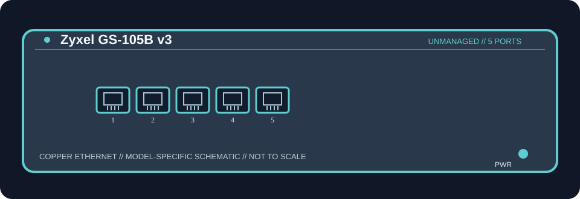

[ MODEL-SPECIFIC NETWORK HARDWARE ]
Zyxel GS-105B v3 5-Port Desktop Gigabit Ethernet Switch
Five 10/100/1000BASE-T RJ-45 ports; integrated port-priority QoS does not make the GS-105B a remotely managed switch. No dedicated uplink, SFP slot, or PoE output.

MODEL IDENTIFICATION: GS-105B hardware version v3 (not earlier GS-105B revisions). Match the complete model and hardware revision on the label before applying specifications.
Exact specifications and compatibility
| Cataloged model / revision | GS-105B v3 — GS-105B hardware version v3 (not earlier GS-105B revisions) |
|---|---|
| Dedicated subcategory | Unmanaged switches |
| Ports and line rates | 5 × 10/100/1000BASE-T RJ-45; nominal negotiated link rate up to 1 Gb/s per port. |
| Switching capacity | 10 Gbps manufacturer switching fabric; this is aggregate switching capacity, not a measured application-throughput result. |
| PoE | No PoE input or output is specified for this model. |
| Uplink and media | No dedicated uplink or optical cage; all ports are copper RJ-45 and any port may connect upstream. Use standards-compatible twisted-pair Ethernet cable. |
| Power | External 5 V DC / 1 A adapter; maximum consumption 2.4 W in v3 data sheet. |
| Form factor | Fanless metal desktop/wall-mountable enclosure; 121 × 75 × 26 mm. |
| Host compatibility | Connects standard copper Ethernet clients and uplink devices without host drivers. Check the v3 product label and use the correct 5 V adapter; QoS priority behavior is fixed and model-specific. |
| Compatibility caveat | Five 10/100/1000BASE-T RJ-45 ports; integrated port-priority QoS does not make the GS-105B a remotely managed switch. No dedicated uplink, SFP slot, or PoE output. Confirm regional SKU, revision, supported cable category and adapter rating; nominal link rates do not guarantee end-to-end throughput. |
| Management / drivers | Unmanaged Layer 2 switch; no switch configuration interface or host driver is required. Do not infer VLAN, routing, PoE, or managed-switch features. |
Model-specific notes
Five 10/100/1000BASE-T RJ-45 ports; integrated port-priority QoS does not make the GS-105B a remotely managed switch. No dedicated uplink, SFP slot, or PoE output. Switching capacity is the manufacturer’s aggregate fabric figure; it is not a benchmark. The switch does not provide Internet access by itself and requires an upstream network/router for external connectivity.
Manufacturer and data-sheet sources
- Zyxel GS-105B v3 official support download libraryManufacturer product documentation for the exact model/revision, including specifications and support details.
- Zyxel GS-105B v3 official data sheet (PDF)Manufacturer product documentation for the exact model/revision, including specifications and support details.
Specifications apply to the stated model/revision and source region. Verify the physical nameplate and bundled adapter before use; product variants with similar names may differ.